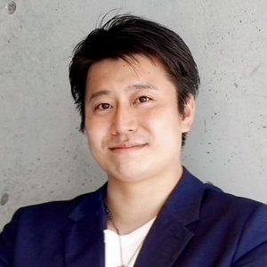

今日決めたいこと（アジェンダ）
商工会からの回答（整理）
井上さん・滑川さん、事務局長への確認ありがとうございました。前提がほぼ固まりました。
→ この懸念にきちんと答えるのが、今回の設計の肝です（4章）。
提案：「社長のお金の勉強会」全3回
社長も守る。会社も、社員も、家族も守る。
——ただ、社長自身が整っていなければ、どれも守れない。
対象が経営者になったので、テーマを「福利厚生」から「社長のお金の守る順番」に切り替えます。社長個人のお金と会社のお金を分けて整えるところから始めて、会社、社員と家族へと守る範囲を広げていく3回構成です。
単発でなく3回にする理由は、学びの定着だけではありません。関係が3回積み上がり、締切が3つでき、「宿題」という自然な口実が生まれるので、個別相談への流れが無理なくつくれます。
3回の構成（各90分）
「社長の財布と、会社の財布」
- 混ざると何が起きる？役員報酬・役員貸付・個人保証の"見えない絡まり"
- 社長の老後は誰も守ってくれない退職金ゼロ問題と、共済・iDeCo・NISAの社長版
- 10分で分かる、社長の"守りの順番"会社より先に整えるべき3つ
「社長が倒れた翌日、会社で何が起きるか」
- 翌日シミュレーション借入・個人保証・売上停止、家族に来る電話
- 借金は、保障とセットで考える借入額と守りの額のバランスの見方
- 事業承継は「入口」だけ今日決める誰に・いつ・何を、の3行メモ
「辞めない会社、揉めない家族」
- 社員が辞めない会社のお金の仕組み退職金・企業型DCの入口、福利厚生としての"お金の教育"
- 揉めない相続の入口家族に「残すもの」と「伝えるもの」は別
- 社長のお金の全体設計3回分の数字をつなげて1枚に
※ 各回は単独でも完結する作りにします（途中参加OK）。第3回は自然に「社員向け勉強会」の提案につながるので、来年度の展開の種にもなります。
開催日：2パターン
商工会が出してくれた3日程がすべて使えるので、2つの組み方を提案します。どちらも第1回は12/3（木）です。
12月集中型
- 商工会がOKした日程をそのまま使える＝調整ゼロで即確定
- 2週間で関係が一気に深まる。熱が冷めない
- 1〜3月をまるごと個別相談・お手続きに充てられる
- 12月の忙しい時期に3回。参加者の負担は大きめ
- 宿題を計算する時間が短い（→ 個別相談で一緒に計算、が生きる）
月1型
- 宿題を実践する時間があり、行動が変わりやすい
- 回ごとに告知でき、途中参加を拾える
- 年度内に3回、3月に相談が集中
- 1・2月の日程を商工会と新たに調整
- 間が空くと熱が冷める。リマインドが必須
- 3月に相談が集中し、年度内のお手続きが詰まる
※ 商工会は「1回」のつもりのはずなので、「第1回は12/3で確定。第2・3回はどちらのパターンがやりやすいか」の聞き方で出すと通りやすいです。
個別相談の募り方（津田さんの懸念への答え）
「終わってから講師に話しかける」方式はやめます。残らせない・並ばせない・その場で予約が入る設計にします。
- 宿題シート方式：数字を出すには計算が要るので、「計算は個別30分で一緒にやります」が自然な案内になる
- その場でQR予約：残って並ばせない。受付には大木さん・井上さんに立ってもらえると「顔の見える窓口」になる
- 3回参加特典：「社長のお金の全体設計シート」を個別で作成。連続参加の理由と相談化を兼ねる
- 録画特典：各回のオンライン収録分を参加者に後日配布。忙しい社長が欠席回を取り戻せるので、3回通しの参加率を守れる
- 3択アンケート：相談テーマを拾い、次回の冒頭で全体に返す（回収率も上がる）
津田さんの経験則は「単発セミナー」の話です。3回建てそのものが、いちばんの募り方になります。
チラシデザイン 3案（社長版）
経営者向けに作り直しました。3案ともキャッチコピーの切り口が違います。方向が決まれば、日程パターンに合わせてすぐ印刷用データまで仕上げます。
会社が整う。
1回だけの参加もOK／見逃し配信あり

講師：森川 満章商工会議所 創業塾 役員
かんたん申込 →
間違えていませんか？
1回だけの参加もOK／見逃し配信あり
商工会議所 創業塾 役員
こちらから →
混ざっていませんか？
1回だけの参加もOK／見逃し配信あり
Voicy「ふるふるラジオ」配信中
かんたん申込 →
※ 第2回・第3回の日付は、日程パターンが決まり次第入れます。主催・共催の表記、講師の肩書きの出し方も、この場で決めてしまいましょう。
※ 経営者向けなら昼間の開催も選べるので、時間帯（18:30 or 昼）も一緒に決めたいです。
タイトル候補（キャッチの別案）
- 社長も守る。会社も、社員も、家族も守る。本命。守る範囲が広がる順番をそのまま言葉に
- 社長が整えば、会社が整う。A案のキャッチ。短くて覚えやすい
- 守る順番、間違えていませんか？B案のキャッチ。問いかけ型
- 社長のお金と会社のお金、混ざっていませんか？C案のキャッチ。いちばん具体的で「ドキッ」とする
- 会社を守る前に、社長を守る。順番論を一文で。硬めのトーンにも合う
- 社長の「お金の3つの守り」3回構成がそのまま伝わる。連続講座感を出したいとき
ハイブリッドの運営とZoomホスト
ハイブリッドは事務局長の希望なので、前提として組みます。配信まわりはこちらで持ち、オンライン側の質問は大木さん・滑川さんに拾ってもらう分担にしたいです。
| 役割 | 内容 | 担当（案） |
|---|---|---|
| 講義・進行 | 登壇、スライド、質疑、宿題シート | fulfull（森川） |
| Zoom設定・URL発行・録画 | ホストはfulfull（前回の打ち合わせで決定） | fulfull（森川） |
| オンライン質疑の拾い上げ | チャット・挙手を見て講師につなぐ | 大木さん・滑川さん |
| オンライン申込管理 | 申込フォームの窓口・参加URL案内・リマインド | fulfull |
| 会場受付・相談予約の受付 | 受付名簿・アンケート回収・QR予約の案内 | 東京海上さん or 商工会さん |
| 会場設営 | プロジェクター・スクリーン・ネット回線の確認 | 東京海上さん or 商工会さん（＋事前にこちらで下見も可） |
Zoomのホストはfulfullで決定済みです（前回の打ち合わせ）。チャット・Q&A・録画をこちらで自由に設計でき、申込→リマインド→当日URL→アンケートまで一気通貫で運用します。参加者情報の取り扱いだけ、事前に取り決めておきます。
本番の1〜2週間前に接続リハーサルを1回入れて、会場側の回線・音声・画面共有を実機確認しましょう（リハの段取りはこちらでやります）。
費用の考え方：3回でも、登壇料はいただきません
「1回なら無料、3回だから有料」という話にはしません。3回にするのは、こちらの時間も体力もかかりますが、社長さんたちを本当に助けるには1回でまとめるのは難しく、信頼が積み上がっていない状態で最後に商品の話をすることもできないからです。だから3回、しっかりやります。
ゴールは「3回やって終わり」ではなく、参加した社長さんが個別相談まで進み、結果につながること。そしてこの形を、ここから何度も開催していけることです。1回目でその型をつくりましょう。
- 実費（印刷・郵送など）の負担元
- 個別相談から先のお手続き・計上の窓口と分担
成果の記録（次につなげるために）
3回分を1枚の共有シートに残します（シートはこちらで用意）。この1枚が商工会さんへの報告資料にも、次の団体への提案材料にもなります。
今後に向けて
すでに一緒に動いてもらっているので、ここは提案というより「型を残す」話です。「社長のお金の勉強会・全3回」は経営者がいる団体ならどこでも成立するので、次の声かけ先が出てきたときに、同じ流れですぐ動ける形にしておきます。
動き方は1本のマニュアルにまとめてあります。必要なときに、社内でそのまま共有できます。
▶ 団体向けマネーセミナー 立ち上げマニュアル（プロモーターの方向け）逆算スケジュール
- 9/10（今日）日程パターン・チラシの方向・主催表記・時間帯を決める
- 今週中チラシ完成（デザインはfulfullで制作）→ 商工会さんへ
- 9月半ば会員企業へ郵送①＋井上さんの個別お声かけ開始
- 10月〜11月申込受付／郵送②／リマインド（参加率がいちばんの分かれ目）／接続リハーサル
- 12/3（木）第1回「社長自身を整える」→ 宿題シート＋その場でQR予約
- パターン①：12/8・12/11第2回・第3回 → 1〜3月は個別相談・お手続きに集中
- パターン②：1月中旬・2月上旬第2回・第3回 → 3月に個別相談・お手続き
- 3月末3回分の記録で振り返り → 「次」と「他の団体」へ